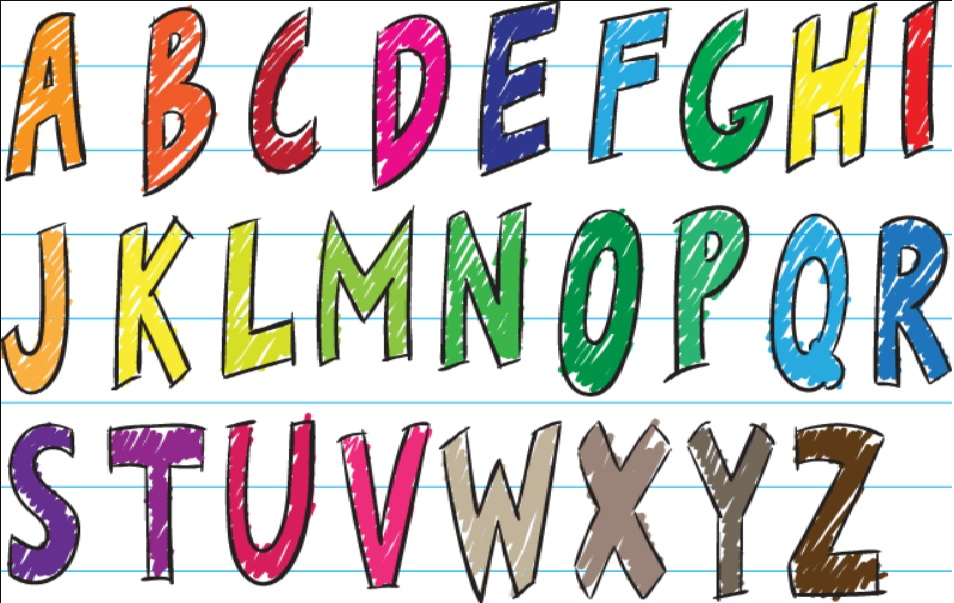

ASL to Text
In recent years, ASL has become the medium of communication for thousands, if not millions of people. However, very few people with no hearing impairment know the various symbols of this sign-language. This project aims to bridge the gap between those who know and those who don't know this language. This project uses the MobileNet architecture to recognise patterns in the video frames (which are taken from your camera) and predicts the ASL sign you are making. The model is trained on the ASL Alphabets dataset.